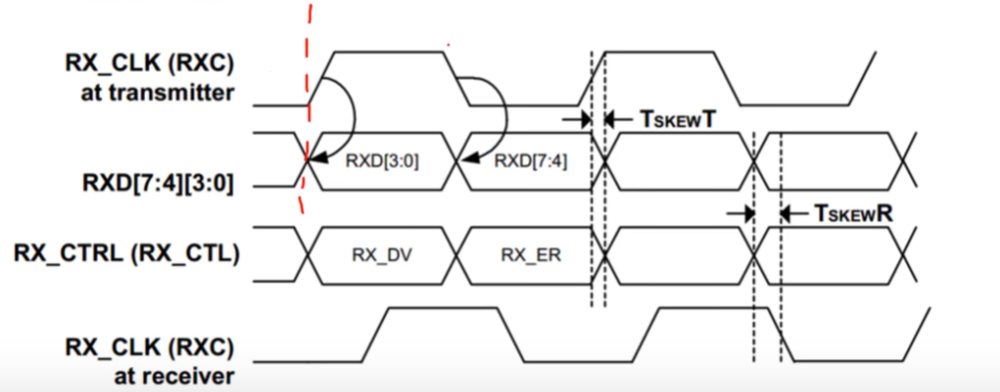

以太网简介
（1）$RJ45$接口的定义

· ① 传入$TX/RX$的是模拟信号，之后通过$PHY$芯片转化为数字信号
其中$MDC,MDIO$为$PHY$的配置引脚（速度等）
· ②在$1G$时，$RXC$为$125MHZ$(双倍采样，为$125·2·4$)，而在$100M/10M$为单沿采样.
即$125M/25M/2.5M$
· ③$RXCTL$用来指示有效信号
$RTL8211FD$的$PHY$芯片简介
一.引脚的复用
当芯片重置时，由于引脚数不够，有些引脚是复用的，会在重置时读取这些引脚。
二.常用的MDIO配置寄存器(总共31个寄存器)
①$BMCR$寄存器($0x00$)：基础情况寄存器
· 调节$PHY$重置/通信速率/$ANE$(自协商)
②$BMSR$寄存器($0x01$)：状态寄存器
· 自协商完成状态指示/成功建立连接指示
③$PHYSR$寄存器($0x1A$)
· 判断当前的通信速率
三.MDIO接口时序
①前导码($Preamble$)：32个1
②帧开始($ST$)：01
③操作码($OP$)
④$PHY$地址($PHYAD$)
⑤寄存器地址($REGAD$)：32个寄存器
⑥Turn around($TA$)
⑦数据位：这里即可能输入也可能输出
· 注：$IDLE$在空闲时被上拉为$Z$

· 其中$MDC$在($12.5MHZ$以下)，此处使用$6MHZ$。
MDIO通信代码编程
· 本开发板的$MDIO$的物理地址为$5’h01$
· $MDC$上升沿采样（输入），在下降沿改变$MDIO$（输出）
ARP(地址解析协议)
· 通过IP地址获取物理(MAC)地址
ARP映射是一种动态映射，即不需要手动绑定的映射。
（1）ARP帧格式
（2）一般以太网帧格式

· CRC-32校验
（3）帧间隙
RGMII接口
（1）$RGMII$接口是在MAC于PHY之间常用的千兆网通信接口，采用4位数据接口，工作时钟为$125MHZ$，在上升沿和下降沿传输数据，所以是$1GMbps$
$RXC/TXC$：时钟信号
$RXCTL/TXCTL$：数据控制信号，设置为1

· 最好将$RX_CLK$延迟几纳秒，保证采集到的$RXD$数据已经达到稳定(在硬件上已经配置好了)